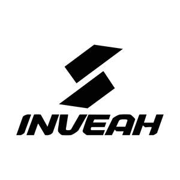

Trade Mark Journal No.2026/007 13 February 2026
UK00004329586 25 January 2026 (21)

- Class 21
- Household or kitchen containers; kitchen utensils; non-electric cookware; cookware sets; pots and pans; frying pans; saucepans; stock pots; baking dishes; roasting trays; casserole dishes; food storage containers; lunch boxes; insulated food containers; microwave-safe food containers; drinking bottles; water bottles; thermal flasks; cups; mugs; plates; bowls; serving dishes; tableware; glassware; dish racks; cutlery holders; cutlery trays; refrigerator storage containers; pantry storage containers; storage boxes; storage baskets; spice containers; spice racks; tea infusers; coffee filters; coffee drippers; kettles, non-electric; ice cube trays; ice buckets; water jugs; pitchers; chopping boards; cutting mats; rolling boards; roti making utensils; kitchen knives; kitchen scissors; graters; peelers; tongs; ladles; spatulas; whisks; measuring cups; measuring spoons; baking utensils; food preparation utensils; salt and pepper shakers; oil dispensers for household use; can openers; bottle openers; silicone baking mats; food covers; mesh food covers; serving trays; placemats; coasters; napkin holders; cleaning utensils; sponges for household cleaning; scrubbing pads; brushes; dish brushes; mops; brooms; dustpans; drying mats; dish cloths; soap dispensers; soap dishes; toothbrush holders; cosmetic containers; trash bins; waste bins; pedal bins; waste paper baskets; laundry baskets; household buckets; household gloves; ironing board covers; clothes drying racks; plant pots; flower vases; toilet brush holders; all of the aforesaid goods relating to household and kitchen use.
AXILONIX LIMITED